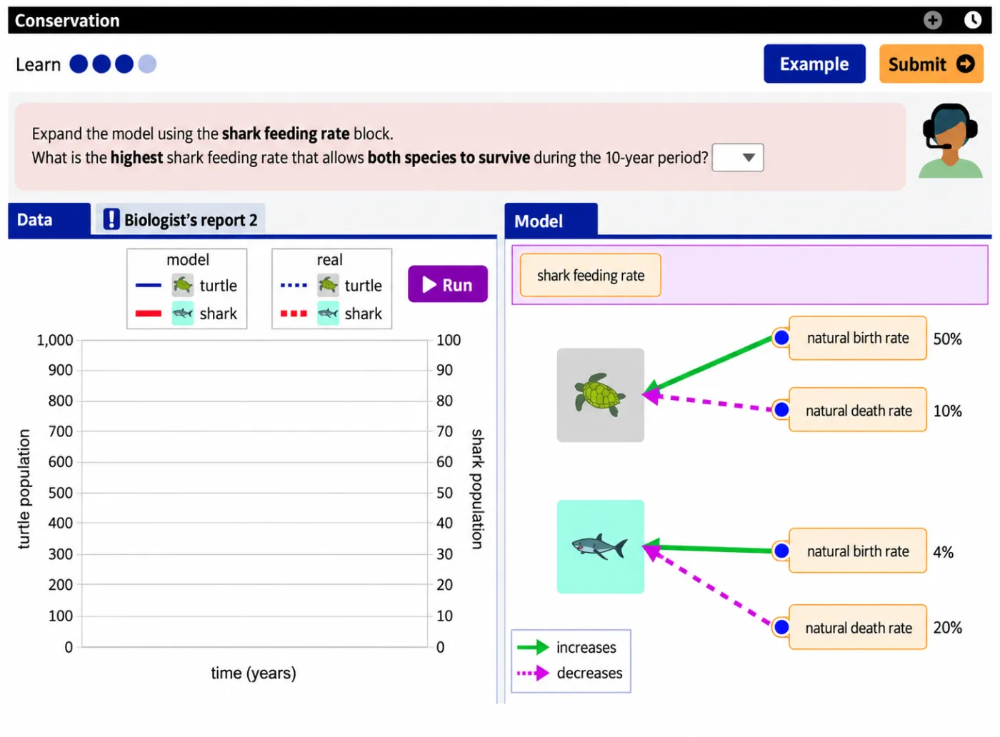

ជំនាញសតវត្សទី២១ និងទម្រង់សំណួរ
១. ជំនាញសតវត្សទី ២១ និងការគិតបែបកុំព្យូទ័រ
បច្ចុប្បន្ន ប្រព័ន្ធអប់រំទូទាំងពិភពលោកកំពុងយកចិត្តទុកដាក់កាន់តែខ្លាំងទៅលើ «ជំនាញសតវត្សទី២១» និងស្វែងរកវិធីបញ្ចូលជំនាញទាំងនេះទៅក្នុងកម្មវិធីសិក្សា។ អង្គការ OECD បានបោះពុម្ពផ្សាយឯកសារ ជាច្រើនពាក់ព័ន្ធនឹងជំនាញទាំងនេះ ហើយថែមទាំងបានគាំទ្រគម្រោងស្រាវជ្រាវ «The Future of Education and Skills: Education 2030» ដែលមានការចូលរួមពីប្រទេសប្រមាណ ២៥។ គម្រោងនេះសិក្សាពីទម្រង់នៃកម្មវិធីសិក្សានាពេលអនាគត ដោយផ្តោតជាបឋមលើមុខវិជ្ជាគណិតវិទ្យា។ ក្របខណ្ឌ PISA ២០២២ បានរំលេចនូវជំនាញសំខាន់ៗមួយចំនួនដូចជា៖
| ១. ការគិតបែបស៊ីជម្រៅ Critical thinking | វិភាគ និងវិនិច្ឆ័យព័ត៌មានដោយហេតុផល ជាជាងការទទួលយកភ្លាមៗ |
| ២. ការច្នៃប្រឌិត Creativity | បង្កើតតំណាងគណិតវិទ្យា ឬរិះរកវិធីសាស្ត្រថ្មីៗក្នុងការដោះស្រាយបញ្ហា |
| ៣. ការស្រាវជ្រាវ និងការស៊ើបអង្កេត Research and inquiry | ចោទសួរ ប្រមូលទិន្នន័យ និងវិភាគភស្តុតាងដើម្បីរកដំណោះស្រាយ |
| ៤. ការចាត់ចែងខ្លួនឯង ការផ្តួចផ្តើម និងការតស៊ូ Self-direction, initiative, and persistence | មានម្ចាស់ការលើខ្លួនឯង តស៊ូប្រឹងប្រែង និងចេះប្តូរយុទ្ធសាស្ត្រពេលជួបឧបសគ្គ |
| ៥. ការប្រើប្រាស់ព័ត៌មាន Information use | កំណត់ និងជ្រើសរើសយកតែព័ត៌មានដែលពាក់ព័ន្ធនឹងការដោះស្រាយ (លំនាំ Formulate) |
| ៦. ការគិតជាប្រព័ន្ធ Systems thinking | យល់ពីទំនាក់ទំនង និងឥទ្ធិពលទៅវិញទៅមករវាងធាតុផ្សំផ្សេងៗ នៅក្នុងប្រព័ន្ធ តែមួយ |
| ៧. ការទំនាក់ទំនង Communication | បង្ហាញ និងបកស្រាយគំនិតតាមរយៈនិមិត្តសញ្ញា ដ្យាក្រាម ឬការពន្យល់ (មិនសំដៅត្រឹមតែការនិយាយទេ) |
| ៨. ការឆ្លុះបញ្ចាំង Reflection | វាយតម្លៃឡើងវិញលើភាពសមស្របនៃយុទ្ធសាស្ត្រ និងលទ្ធផលដែលទទួល បាន (លំនាំ Interpret/Evaluate) |
គុណតម្លៃដ៏សំខាន់មួយនៃជំនាញទាំងនេះ គឺវាដើរតួជាឧបករណ៍ការពារខ្លួន។ នៅក្នុងសង្គមបច្ចុប្បន្ន មានការអះអាង និងសេចក្តីសន្និដ្ឋានខុសឆ្គងជាច្រើន ដែលតែងតែលើកយកតួលេខ ឬទិន្នន័យគណិតវិទ្យា មកធ្វើជា អំណះអំណាង។ ជាញឹកញាប់ ត្រឹមតែការប្រើប្រាស់តក្កវិជ្ជាមូលដ្ឋាន ក៏អាចជួយយើងឱ្យមើលធ្លុះភាពមិនប្រក្រតី ទាំងនោះបានដែរ ព្រោះការបំភ្លៃព័ត៌មានតែងតែបង្កប់នូវភាពផ្ទុយគ្នានៅក្នុងខ្លួនវាស្រាប់។ អាស្រ័យហេតុនេះ នៅពេល សិស្សរៀនពិនិត្យមើលលេខភាគរយក្នុងការផ្សាយពាណិជ្ជកម្ម ពួកគេមិនត្រឹមតែ រៀនពីវិធីគណនាប៉ុណ្ណោះទេ ប៉ុន្តែថែមទាំងកំពុងរៀនពីរបៀបការពារខ្លួនពីការបោកបញ្ឆោតផងដែរ។
ការគិតបែបកុំព្យូទ័រ (Computational Thinking)
ការគិតបែបកុំព្យូទ័រ (Computational Thinking) គឺជាចំណុចបន្ថែមថ្មីមួយនៅក្នុងក្របខណ្ឌ PISA ២០២២។ ជារួម និយមន័យនៃការគិតបែបនេះ ផ្តោតលើចំណុចសាមញ្ញៗចំនួនបួនគឺ៖ ការសម្គាល់លំនាំ ការបំបែកបញ្ហាធំៗជាផ្នែកតូចៗ ការវាយតម្លៃថាតើឧបករណ៍កុំព្យូទ័រអាចជួយបានត្រង់ណាខ្លះ និងការកំណត់ជំហានឱ្យបានច្បាស់លាស់ ដើម្បីដោះស្រាយបញ្ហា។ ជាក់ស្តែង នេះមិនមែនរឿងចម្លែកសម្រាប់សិស្សគណិតវិទ្យាទេ ព្រោះលំនាំគណិតវិទ្យា (Formulate/Employ/Interpret-Evaluate) និងការគិតហេតុផលដែលពួកគេប្រើប្រចាំ ក៏ជាការគិតបែបនេះស្រាប់ ទៅហើយ។ និយមន័យនេះស្រដៀងនឹងការសិក្សា ICILS (International Computer and Information Literacy Study) ឆ្នាំ ២០១៨ ប៉ុន្តែសម្រាប់ PISA វាគ្រាន់តែជាព័ត៌មានបន្ថែម មិនមែនជាផ្នែកស្នូលនៃការវាយតម្លៃឡើយ។
| ការអនុវត្ត | អត្ថន័យ |
|---|---|
| ១. ការបំបែកបញ្ហា Decomposition | បំបែកបញ្ហាស្មុគស្មាញទៅជាផ្នែកតូចៗ ដើម្បីងាយស្រួលដោះស្រាយ |
| ២. ការសម្គាល់លំនាំ/អរូបីកម្ម Abstraction | ចម្រាញ់យកតែព័ត៌មានស្នូល និងផាត់ចោលសេចក្តីលម្អិតដែលមិនចាំបាច់ |
| ៣. ការគិតតាមក្បួនដោះស្រាយ Algorithmic thinking | រៀបចំដំណោះស្រាយជាជំហានៗតាមលំដាប់លំដោយច្បាស់លាស់ ដើម្បីងាយស្រួលអនុវត្តតាម |
| ៤. ការទាញជាវិធានទូទៅ Generalisation | ទាញយកវិធីសាស្ត្រពីបញ្ហាមួយ ទៅអនុវត្តលើបញ្ហាផ្សេងទៀតដែលមានលក្ខណៈស្រដៀងគ្នា |
| ៥. ស្វ័យប្រវត្តិកម្ម Automation | ប្រគល់ភារកិច្ចដែលធ្វើដដែលៗ ឱ្យបច្ចេកវិទ្យាដំណើរការដោយស្វ័យប្រវត្តិ |
សម្រាប់វដ្តឆ្នាំ ២០២៥ កម្មវិធី PISA បានដាក់បញ្ចូលនូវមុខវិជ្ជារង្វាយតម្លៃថ្មីមួយ គឺ «ការរៀនក្នុងពិភពឌីជីថល» (Learning in the Digital World, LDW)។ ទោះបីជាមុខវិជ្ជានេះ មិនមែនជាផ្នែកនៃគណិតវិទ្យា ក៏ពិតមែន ប៉ុន្តែ វាបានដើរតួជាការពង្រីកវិសាលភាពនៃ ការគិតបែបកុំព្យូទ័រ ដូចដែលបានរៀបរាប់ខាងលើ ដោយរួមបញ្ចូលបន្ថែមនូវ ការរៀនដោយគ្រប់គ្រងខ្លួនឯង (Self-regulated learning)។ ដើម្បីស្វែងយល់ និងសាកល្បងវាដោយផ្ទាល់ សូមចូលទៅកាន់៖ https://pisa2025ldw.pilaproject.org។

២. ទម្រង់សំណួរតាមបែប PISA
រង្វាយតម្លៃអក្ខរកម្មគណិតវិទ្យា PISA ត្រូវបានកសាងឡើងដោយផ្អែកលើធាតុសំខាន់ៗចំនួនបួនគឺ៖ បរិបទ, ខ្លឹមសារគណិតវិទ្យា, ការគិតហេតុផល និងលំនាំគណិតវិទ្យា, និង ទម្រង់សំណួរ។ នៅក្នុងផ្នែកនេះ យើងនឹងផ្តោត តែទៅលើធាតុទីបួនប៉ុណ្ណោះ។
យោងតាមក្របខណ្ឌសំណួរតេស្តរង្វាយតម្លៃ PISA ២០២២ ត្រូវបានកំណត់ឱ្យប្រើប្រាស់ ទម្រង់សំណួរចំនួនបីប្រភេទ រួមមាន៖ សំណួរពហុជ្រើសរើស (Simple multiple choice), សំណួរសរសេរ (Constructed-response), និង សំណួរចម្លើយឆ្លាស់ (Complex multiple choice)។ ចំណែកឯបច្ចេកទេសផ្សេងៗទៀត (ដូចជាការអូសទម្លាក់ [Drag and drop] ការប្រើបញ្ជីទម្លាក់ចុះ [Drop-down list] ឬ ស្លាយឌ័រ [Slider]) មិនមែនជាទម្រង់សំណួរថ្មីឡើយ គឺពួកវាគ្រាន់តែជាឧបករណ៍បច្ចេកវិទ្យា ឬមធ្យោបាយសម្រាប់ការធ្វើតេស្តប៉ុណ្ណោះ។
ទម្រង់សំណួរ ជាការសម្រេចចិត្តរបស់គ្រូ មិនមែនកំណត់ដោយខ្លឹមសារមេរៀនទេ។ ខ្លឹមសារគណិតវិទ្យាដដែល អាចសួរដោយពហុជ្រើសរើស ឬដោយសរសេរពន្យល់។
ខាងក្រោមនេះ ជាប្រធានបទតែមួយ ប្រើជាមូលដ្ឋានសម្រាប់សំណួរគំរូគ្រប់ទម្រង់ក្នុងផ្នែកនេះ ដើម្បីឱ្យឃើញច្បាស់ថា អ្វីដែលប្តូរ គឺរបៀបសួរ មិនមែនខ្លឹមសារទេ។
| ប្រធានបទ | ការទិញអង្ករ |
នៅជុំវិញភូមិមួយ ក្នុងចម្ងាយ ៨ គ.ម មានហាងលក់អង្ករក្រអូបចំនួន ៥។ តារាងបង្ហាញតម្លៃអង្ករក្រអូប និងចម្ងាយពីភូមិទៅហាងនីមួយៗ។
| ហាង | តម្លៃអង្ករក្រអូប (រៀល / ១ គ.ក្រ) | ចម្ងាយ (គ.ម) |
|---|---|---|
| ក | ៤ ២០០ | ២ |
| ខ | ៣ ៩០០ | ៥ |
| គ | ៤ ០០០ | ១ |
| ឃ | ៤ ៥០០ | ៣ |
| ង | ៣ ៨០០ | ៨ |
ក. សំណួរជ្រើសរើសចម្លើយ (Selected-response)
ទម្រង់នេះតម្រូវឱ្យសិស្សជ្រើសរើសចម្លើយមួយ ឬច្រើនពីជម្រើសដែលមានស្រាប់ ដែលអាចឱ្យប្រព័ន្ធកុំព្យូទ័រដាក់ពិន្ទុបានដោយស្វ័យប្រវត្តិ។ ផ្អែកតាមឯកសារ PISA ២០២២ ទម្រង់នេះមានពីរប្រភេទរងគឺ៖ ពហុជ្រើសរើស (Simple MC) និង ចម្លើយឆ្លាស់ (Complex MC)។
ក.១ ពហុជ្រើសរើស (Simple multiple choice)
សិស្សជ្រើសរើសចម្លើយតែមួយគត់ ពីជម្រើសដែលមានស្រាប់ (ជាទូទៅមាន ៤ ជម្រើស)។ ប្រព័ន្ធកុំព្យូទ័រអាចដាក់ពិន្ទុបានរហ័ស និងសមស្របសម្រាប់ពិនិត្យការយល់ដឹងជាមូលដ្ឋានលើគោលគំនិតណាមួយ។ ទោះជាយ៉ាងណា វាផ្តល់ភស្តុតាងតិចតួចប៉ុណ្ណោះ ព្រោះគ្រូដឹងត្រឹមតែចម្លើយត្រូវ ឬខុស ដោយមិនឃើញពីរបៀបគិតរបស់សិស្សឡើយ។
ការដាក់ពិន្ទុ៖ ផ្តល់ពិន្ទុពេញ ឬ ពិន្ទុសូន្យប៉ុណ្ណោះ។
ក.២ ចម្លើយឆ្លាស់ (Complex multiple choice)
សិស្សត្រូវធ្វើការសម្រេចចិត្តច្រើនដងជាប់ៗគ្នា ក្នុងសំណួរតែមួយ។ នៅលើអេក្រង់ វាអាចមានរូបរាងច្រើនបែប ដូចជាការធីក «ពិត/មិនពិត» តាមជួរនីមួយៗ ការជ្រើសរើសពីបញ្ជីទម្លាក់ចុះ ការរៀបលំដាប់ ឬការធីកចម្លើយត្រូវទាំងអស់ (ដូចគំរូអេក្រង់ខាងក្រោម)។ ទម្រង់នេះនៅតែអាចឱ្យប្រព័ន្ធកុំព្យូទ័រដាក់ពិន្ទុបានស្វ័យប្រវត្តិ ប៉ុន្តែវាផ្តល់ភស្តុតាង នៃការយល់ដឹងច្រើនជាង ព្រោះអាចបង្ហាញឱ្យឃើញនូវផ្នែកដែលសិស្សនៅខ្វះខាត។
ការដាក់ពិន្ទុ៖ អាចទទួលបានពិន្ទុមិនពេញលេញ។
ខ. សំណួរសរសេរ (Constructed response)
ទម្រង់នេះតម្រូវឱ្យសិស្សរកវិធីដោះស្រាយ និងសរសេរចម្លើយដោយខ្លួនឯង ដោយពុំមានជម្រើសផ្ដល់ជូនជាមុន ឡើយ។ ក្របខណ្ឌ PISA បែងចែកសំណួរសរសេរជាពីរប្រភេទ ផ្អែកលើរបៀបវិនិច្ឆ័យចម្លើយគឺ មួយប្រភេទកុំព្យូទ័រ អាចដាក់ពិន្ទុបានដោយស្វ័យប្រវត្តិ និងមួយប្រភេទទៀតទាមទារឱ្យគ្រូជាអ្នកអាន និងវិនិច្ឆ័យផ្ទាល់។ នៅលើអេក្រង់ សិស្សអាចប្រើប្រាស់ម៉ាស៊ីនគិតលេខវិទ្យាសាស្ត្រ ហើយសម្រាប់ចម្លើយដែលជាកន្សោមគណិតវិទ្យា ក៏មានផ្ដល់នូវ ឧបករណ៍ជំនួយសម្រាប់សរសេររូបមន្តផងដែរ។
ខ.១ ចម្លើយខ្លី (Closed constructed-response)
សិស្សត្រូវគណនា ឬស្វែងរកចម្លើយដោយខ្លួនឯង រួចសរសេរបញ្ចូលជាទម្រង់ខ្លី និងជាក់លាក់ ដែល ភាគច្រើនជាតម្លៃលេខទោល ឬពាក្យខ្លីៗ។ ចម្លើយប្រភេទនេះមានភាពងាយស្រួលក្នុងការវិនិច្ឆ័យថាត្រឹមត្រូវ ឬខុស ហើយជាទូទៅត្រូវបានដាក់ពិន្ទុស្វ័យប្រវត្តិតាមប្រព័ន្ធកុំព្យូទ័រ។ ទោះជាយ៉ាងណា ដោយសារសំណួរមិនតម្រូវឱ្យបង្ហាញដំណោះស្រាយ ក្នុងករណីដែលចម្លើយចុងក្រោយមិនត្រឹមត្រូវ គ្រូពុំអាចដឹងថាការភាន់ច្រឡំ ឬកំហុសកើតឡើងនៅជំហានណានោះទេ។
ការដាក់ពិន្ទុ៖ ផ្តល់ពិន្ទុពេញ ឬ ពិន្ទុសូន្យប៉ុណ្ណោះ។
ខ.២ ចម្លើយវែង (Open constructed-response)
សំណួរប្រភេទនេះតម្រូវឱ្យសិស្សសរសេររៀបរាប់ក្បោះក្បាយ ដោយបង្ហាញពីដំណាក់កាលនៃការដោះស្រាយ ឬពន្យល់ហេតុផលគណិតវិទ្យាឱ្យបានច្បាស់លាស់។ ចម្លើយបែបនេះទាមទារឱ្យគ្រូ ឬអ្នកជំនាញជាអ្នកអាន និងវិនិច្ឆ័យ ផ្ទាល់ ដោយពុំអាចដាក់ពិន្ទុដោយស្វ័យប្រវត្តិតាមប្រព័ន្ធកុំព្យូទ័របានឡើយ។ ម្យ៉ាងវិញទៀត វាផ្ដល់ភស្តុតាងយ៉ាង រឹងមាំ អំពីការយល់ដឹងស៊ីជម្រៅ ដោយបង្ហាញឱ្យឃើញនូវវិធីសាស្ត្រដោះស្រាយបញ្ហា ការគិតពិចារណាប្រកបដោយ ហេតុផល និងសមត្ថភាពក្នុងការបញ្ជាក់អំណះអំណាងបានច្បាស់ជាងទម្រង់ដទៃ។ គំរូអេក្រង់ខាងក្រោមបង្ហាញពីសំណួរដែលផ្សំការជ្រើសរើស ជាមួយប្រអប់សរសេរពន្យល់។ ក្នុងឯកសារ PISA ២០២២ សំណួរ «ជ្រើសរើស រួចពន្យល់» បែបនេះ ត្រូវបានចាត់ថ្នាក់ជាចម្លើយវែង (Human coded) ពីព្រោះទម្ងន់ពិន្ទុភាគច្រើនស្ថិតលើការពន្យល់ ហេតុផល មិនមែនលើការជ្រើសរើសនោះឡើយ។
ការដាក់ពិន្ទុ៖ អាចទទួលបានពិន្ទុមិនពេញលេញ (ផ្អែកលើការវិនិច្ឆ័យដោយផ្ទាល់)។
គ. ការធ្វើតេស្តលើកុំព្យូទ័រ (Computer-based delivery)
ចាប់ពីឆ្នាំ ២០២២ មក វិញ្ញាសាគណិតវិទ្យា PISA ត្រូវបានរៀបចំឡើងលើកុំព្យូទ័រ (Computer-Based Assessment)។ ការផ្លាស់ប្ដូរនេះពុំបានបង្កើតទម្រង់សំណួរថ្មីបន្ថែមពីលើទម្រង់ជ្រើសរើសចម្លើយ (ផ្នែក ក) ឬសំណួរសរសេរ (ផ្នែក ខ) ឡើយ ប៉ុន្តែវាអនុញ្ញាតឱ្យបង្ហាញកិច្ចការតាមបែបអន្តរកម្ម ដែលវិញ្ញាសាក្រដាសពុំអាចធ្វើបាន។
ផ្ទាំងគំរូខាងក្រោមប្រើប្រាស់ប្រធានបទតែមួយគឺ «ការទិញអង្ករ» ដោយមានសំណួរចំនួន ៥ បន្តបន្ទាប់គ្នា តាមប្លង់អេក្រង់ PISA ជាក់ស្ដែង (សំណួរនៅខាងឆ្វេង និងផ្ទាំងទិន្នន័យនៅខាងស្ដាំ)។
គ.១ តារាងគណនាទិន្នន័យ (Spreadsheet)
ផ្ទាំងខាងស្ដាំជាតារាងទិន្នន័យ (Spreadsheet) ដែលសិស្សអាចតម្រៀបឡើងវិញតាមជួរឈរ ដើម្បីជាជំនួយក្នុងការរុករកព័ត៌មាន ដោយប្រព័ន្ធពុំដាក់ពិន្ទុលើឧបករណ៍នេះឡើយ។ សំណួរនៅខាងឆ្វេងជាតារាង «ពិត/មិនពិត» ស្ថិតក្នុងទម្រង់ចម្លើយឆ្លាស់ (ផ្នែក ក.២) និងអាចទទួលបានពិន្ទុមិនពេញលេញ ផ្អែកលើចំនួនជម្រើសដែលឆ្លើយត្រូវ។
ការដាក់ពិន្ទុ៖ អាចទទួលបានពិន្ទុមិនពេញលេញ។
គ.២ បញ្ជីទម្លាក់ចុះ (Drop-down menu)
នៅក្នុងកិច្ចការប្រភេទនេះ សិស្សត្រូវជ្រើសរើសឈ្មោះហាងសមស្របមួយសម្រាប់ជួរនីមួយៗ ពីបញ្ជីទម្លាក់ចុះ (Drop-down menu) ដែលមានជម្រើស ក, ខ, គ, ឃ និង ង។ ការផ្ដល់កិច្ចការដែលមានជម្រើសច្រើនបន្តបន្ទាប់គ្នាក្នុង សំណួរតែមួយបែបនេះ គឺស្ថិតក្នុងទម្រង់ចម្លើយឆ្លាស់ (ដូចបានបង្ហាញក្នុងផ្នែក ក.២) ដែលប្រព័ន្ធអាចផ្ដល់ពិន្ទុមិនពេញ លេញបាន ប្រសិនបើសិស្សជ្រើសរើសត្រូវពីរជួរក្នុងចំណោមបីជួរ។
ការដាក់ពិន្ទុ៖ អាចទទួលបានពិន្ទុមិនពេញលេញ។
គ.៣ ការអូសទម្លាក់ (Drag and drop)
កិច្ចការនេះតម្រូវឱ្យសិស្សប្រើកូនកណ្ដុរ (mouse) ចុចអូសផ្ទាំងស្លាកឈ្មោះហាង យកទៅទម្លាក់ក្នុងប្រអប់តាមលំដាប់លំដោយដែលបានកំណត់។ ការរៀបលំដាប់លំដោយបែបនេះ គឺចាត់ចូលក្នុងទម្រង់ចម្លើយឆ្លាស់ (ផ្នែក ក.២) ពីព្រោះប្រព័ន្ធកុំព្យូទ័រនឹងពិនិត្យមើលភាពត្រឹមត្រូវនៃលំដាប់រួមទាំងមូល ហើយអាចផ្ដល់ពិន្ទុមិនពេញលេញបាន ប្រសិនបើសិស្សរៀបចំត្រូវមួយចំណែកនៃលំដាប់នោះ។
ការដាក់ពិន្ទុ៖ អាចទទួលបានពិន្ទុមិនពេញលេញ។
គ.៤ ក្រាហ្វិកអន្តរកម្ម (Interactive graph)
នៅក្នុងអេក្រង់នេះ សិស្សអាចចុចអូសនៅលើបន្ទាត់ (Trend line) ឱ្យស្របតាមគំរូចំណុចទិន្នន័យ រួចវិនិច្ឆ័យ និងពន្យល់ ថាតើ ចម្ងាយកាន់តែឆ្ងាយ ពិតជាធ្វើឱ្យតម្លៃកាន់តែថោកមែនឬយ៉ាងណា។ ដោយសារទិន្នន័យ ជាក់ស្ដែង មានចំនួនតិច ហើយមានគម្លាត សំណួរនេះមិនតម្រូវឱ្យទស្សន៍ទាយរកតម្លៃលេខជាក់លាក់ណាមួយ នោះឡើយ។ ផ្ទុយទៅវិញ គោលបំណងពិតប្រាកដនៃកិច្ចការក្រាហ្វអន្តរកម្មនេះ គឺជំរុញឱ្យសិស្សចេះពិពណ៌នា និងវាយតម្លៃទំនាក់ ទំនងរវាងអថេរ ដែលជាហេតុធ្វើឱ្យសំណួរនេះត្រូវបានចាត់ចូលជាប្រភេទសំណួរសរសេរពន្យល់ ឬចម្លើយវែង (ផ្នែក ខ.២)។
ការដាក់ពិន្ទុ៖ អាចទទួលបានពិន្ទុមិនពេញលេញ (ផ្អែកលើការវិនិច្ឆ័យដោយផ្ទាល់)។
គ.៥ គំរូស៊ីមុយឡាស្យុង (Simulation with sliders)
កិច្ចការនេះផ្អែកលើស្ថានភាពជាក់ស្ដែង គឺគ្រួសារមួយត្រូវទិញអង្ករក្រអូបមួយបាវទម្ងន់ ៥០ គីឡូក្រាមក្នុង មួយខែ ហើយជួលម៉ូតូឌុបឱ្យដឹកជញ្ជូន ដោយគិតថ្លៃឈ្នួលធ្វើដំណើរទៅមក ២ ០០០ រៀលក្នុងមួយគីឡូម៉ែត្រ។ សិស្សអាចរំកិលស្លាយឌ័រ (Sliders) ដើម្បីកំណត់តម្លៃអថេរនីមួយៗ (រួមមានបរិមាណអង្ករ ចម្ងាយផ្លូវ និងថ្លៃដឹកជញ្ជូន) ហើយប្រព័ន្ធស៊ីមុយឡាស្យុងនឹងគណនាផលបូកចំណាយសរុបដោយស្វ័យប្រវត្តិ ដែលអនុញ្ញាតឱ្យសិស្សធ្វើការប្រៀប ធៀបរវាងហាងនីមួយៗបានយ៉ាងរហ័ស។ ដោយសារចម្លើយចុងក្រោយតម្រូវឱ្យសិស្សកំណត់ឈ្មោះហាងជាក់លាក់ មួយ ឬសរសេរចំនួនទឹកប្រាក់ នោះកិច្ចការនេះត្រូវបានចាត់ចូលក្នុងប្រភេទសំណួរសរសេរចម្លើយខ្លីមានទម្រង់កំណត់ (ផ្នែក ខ.១)។
ការដាក់ពិន្ទុ៖ ផ្តល់ពិន្ទុពេញ ឬ ពិន្ទុសូន្យប៉ុណ្ណោះ។
ឧបករណ៍អន្តរកម្មទាំងប្រាំខាងលើ មិនមែនជាទម្រង់សំណួរថ្មីឡើយ តែជារបៀបបង្ហាញ និងធ្វើអន្តរកម្មលើកុំព្យូទ័រ ប៉ុណ្ណោះ។ ឯកសារ PISA បញ្ជាក់ច្បាស់ថាសំណួរទាំងអស់សុទ្ធតែស្ថិតក្នុងទម្រង់ផ្លូវការទាំងបីដដែល ដោយគ្មានទម្រង់ទីបួនឡើយ។ លើសពីនេះ ផ្ទាំងប្រឡងកុំព្យូទ័រមានភ្ជាប់ម៉ាស៊ីនគិតលេខបែបវិទ្យាសាស្ត្រ និងប្រអប់វាយរូបមន្ត (ចំណែកការប្រឡងលើក្រដាស សិស្សប្រើម៉ាស៊ីនគិតលេខតាមការអនុញ្ញាត)។
ឃ. តេស្តបន្សាំតាមសមត្ថភាព (Multistage Adaptive Testing)
ការធ្វើតេស្តបន្សាំតាមសមត្ថភាពច្រើនដំណាក់កាល (MSAT) ពុំមែនជាទម្រង់សំណួរឡើយ តែជារបៀបផ្គុំវិញ្ញាសា ដែលកុំព្យូទ័រតម្រង់ទិសកម្រិតលំបាកនៃសំណួរឱ្យស្របតាមសមត្ថភាពជាក់ស្ដែងរបស់សិស្សម្នាក់ៗ។ គោលការណ៍នៅពីក្រោយវិធីនេះគឺ សំណួរដែលងាយពេក ឬពិបាកពេក ប្រាប់បានតិចតួចណាស់អំពីសមត្ថភាពពិតរបស់សិស្ស រីឯសំណួរដែលមានកម្រិតជិតនឹងសមត្ថភាពសិស្ស ផ្ដល់ព័ត៌មានច្បាស់លាស់ជាង។ ដូច្នេះ PISA អាចវាស់វែងសមត្ថភាពបានកាន់តែសុក្រឹត ទាំងចំពោះសិស្សកម្រិតខ្ពស់ និងសិស្សដែលត្រូវការការគាំទ្របន្ថែម។
វិញ្ញាសាត្រូវបានបែងចែកជា ៣ ដំណាក់កាល ដោយប្រើកញ្ចប់សំណួរហៅថា testlet (ប្រមាណ ៩–១០ សំណួរក្នុងមួយកញ្ចប់ ស្មើនឹងពេលធ្វើ ១០–២០ នាទី សរុបប្រមាណ ២៨–៣០ សំណួរ)។ សិស្សទាំងអស់ ចាប់ ផ្ដើមពីកញ្ចប់ស្នូលកម្រិតមធ្យមដូចគ្នា រួចមានចំណុចតម្រង់ទិសតែ ២ លើកប៉ុណ្ណោះ គឺនៅចុងដំណាក់កាលទី ១ និង ទី ២។ ការសម្រេចនីមួយៗផ្អែកលើពិន្ទុសរុបដែលសិស្សប្រមូលបានតាំងពីដើមមក ក្នុងចំណោមសំណួរដែលកុំព្យូទ័រ ដាក់ពិន្ទុស្វ័យប្រវត្តិបាន ពោលគឺមិនមែនផ្អែកលើសំណួរចុងក្រោយតែមួយឡើយ។ ដំណាក់កាលទី ២ មានពីរកម្រិត (ពិបាកជាង ឬងាយជាង) រីឯដំណាក់កាលទី ៣ មានបីកម្រិត (ពិបាក មធ្យម និងងាយ) ដែលសិស្សអាចទៅដល់តាមផ្លូវ ៤ យ៉ាង ដូចបង្ហាញក្នុងរូបភាព ៥.១២។
សម្រាប់មុខវិជ្ជាគណិតវិទ្យា PISA ប្រើការរចនាបែបកូនកាត់ (Hybrid design)៖ សិស្សប្រមាណ ៧៥% ដើរតាមផ្លូវបន្សាំខាងលើ រីឯ ២៥% ទៀតធ្វើកញ្ចប់សំណួរកម្រិតមធ្យមថេរគ្រប់ដំណាក់កាល ដោយមិនប្រែប្រួលតាមចម្លើយឡើយ។ ក្រុមទី ២ នេះផ្ដល់ទិន្នន័យយោង សម្រាប់ផ្ទៀងផ្ទាត់គុណភាព និងកម្រិតលំបាកនៃសំណួរ ដែលធ្វើឱ្យ PISA ពុំចាំបាច់បញ្ជូនសិស្សណាម្នាក់ដោយចេតនា ទៅកាន់សំណួរងាយពេក ឬពិបាកពេកឡើយ។ ការជ្រើស រើសនេះធ្វើឡើងដោយចៃដន្យ មិនមែនជាការវាយតម្លៃសមត្ថភាពសិស្សឡើយ ហើយទោះបីដើរតាមផ្លូវណាក៏ដោយ សិស្សគ្រប់រូបសុទ្ធតែឆ្លើយចំនួនសំណួរស្មើគ្នា។